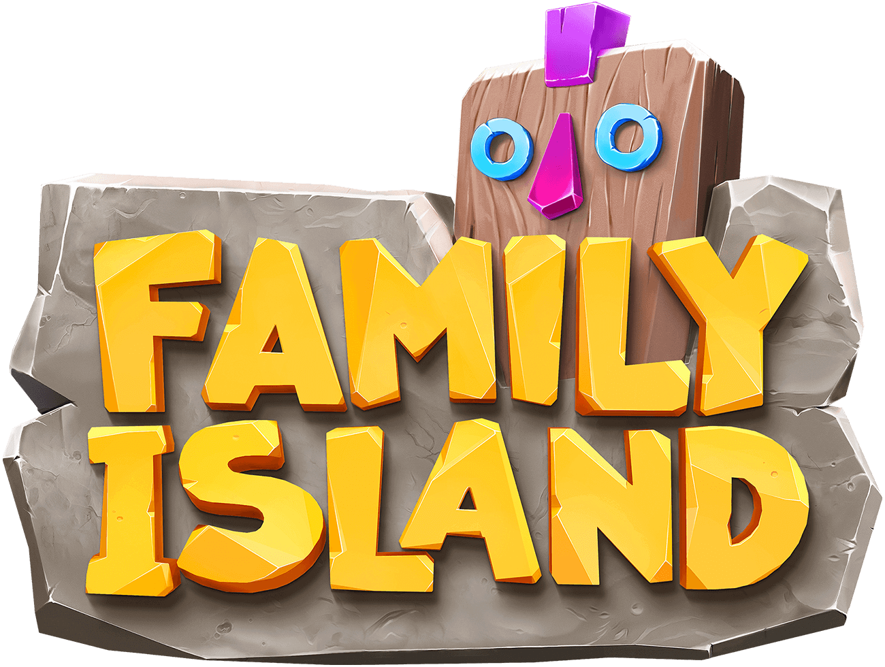
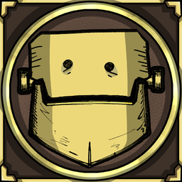

¿Qué es Defold?
Defold es un motor de videojuegos gratuito, ligero y de alto rendimiento, enfocado principalmente en el desarrollo 2D, aunque soporta 3D, utilizando el lenguaje Lua. Es ideal para juegos móviles, web y de escritorio, con capacidades multiplataforma sin regalías, diseñado para ser una solución "todo en uno".
¿Qué lenguajes usa?
Defold utiliza principalmente el lenguaje de programación Lua (específicamente LuaJIT 5.1) para toda la lógica de control, scripting y desarrollo de juegos. Aunque el motor en sí está construido en C++ para lograr un alto rendimiento, los desarrolladores escriben el código de sus juegos en Lua.
Juegos creados con Defold

